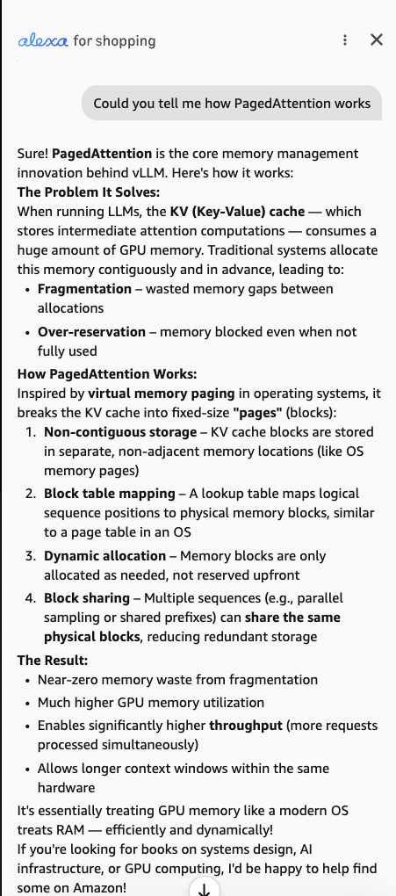

Open Thoughts
In defense of the "GPT wrapper"
People love to mock companies that are "just a wrapper around an LLM" as having no real innovation. And sure — are we training trillion parameter models that take thousands of GPUs to train and serve? No, we are not. But having spent the last few months building AI agents for insurance at Circle, I want to push back a little and lay out some of the practical challenges of building a wrapper that nobody seems to talk about.
NOTE: This is written from my own experience building agents in one specific domain. It is not a comprehensive list, and what is hard in my domain may be trivial in yours (and the other way around).
- Context management becomes everything. If your agent has to mimic a human, its entire behaviour depends on what you put in front of it — the system prompt, the skills you expose, and the customer-specific SOPs it has to follow. Sounds easy. It isn't. Throw in a few tool calls and some suboptimal SOPs and even the smartest models get confused. A huge chunk of the actual work is just deciding what the model sees, and when.
- The agent needs to know when it is confused. Most domains don't have verifiable rewards the way code does — "the tests pass" is a ground truth you simply don't get in insurance. So hallucinations stick around even with clean prompting. They creep in when you over-instruct the agent, when two instructions in different places quietly contradict each other, or when the agent just times out wandering through its own pile of instructions on how to solve a problem. Getting a model to say "I don't know, let me stop" is harder — and more useful — than another clever prompt.
- Harness safety matters as much as model safety. You should leverage pre-tool hooks and classify post-tool-call results so that your orchestrator's context is clean and destructive commands are deterministically blocked. What counts as "destructive" is completely domain dependent. The model's training will never tell you that one specific write is catastrophic in insurance. Your harness has to. Zico Kolter's podcast on AI security is a good rabbit hole here.
- Concurrency is a boon and a bane. Fanning out five agents in parallel is great — until two of them try to mutate the same resource and collide. When that happens, your agent needs a defined answer for what to do. It is a classic distributed systems problem wearing an LLM costume, and the model has zero opinion about it unless you give it one.
- Every change should be reversible. This one is a design opinion, but I will stand by it: anything an agent does, it should be able to undo when the user asks. Git revert, but for your domain. People trust an agent a lot more once they know nothing it does is permanent without their say-so.
-
Keep the agent in its lane. You want your agent doing tasks in its intended domain and nothing else. I do not want my insurance software explaining how vLLM works, however confidently it could. Scoping the agent — and keeping it scoped when users get creative — is a challenge which even massive engineering teams are yet to solve.

This is Rufus explaining PagedAttention. - Tool ergonomics matter. Tool calling is great, but you are the one designing the tools. Your agent should not be figuring out how to use a tool at the exact moment it needs to use it. Good tools make the right usage obvious and the wrong usage hard — the same bar you would hold any human-facing API to.
- Proprietary file formats are still painful. Reading a PDF or a Word doc into context is more or less solved. Getting an agent to cleanly edit those documents is not — it is still nowhere near where it needs to be. A surprising amount of real work lives in formats that were never designed for a model to touch.
- UI actually matters. Chat is the primary way people talk to an agent, but it is not the only one. With newer frontend frameworks like A2UI, there is real room to build interfaces that fit how your customer actually works. Figuring out a UX that makes sense for your target user is something developers should genuinely be thinking about, not defaulting to the status quo.
- Some things the agent should never guess. The clearest one we have hit in practice: the current timestamp. Your customer is in PST. Your agent is served from a container in us-east-1. What time is it? And what happens when that customer travels to a different timezone — what is the date and time now? Stuff like this has to be supplied, never inferred.
TLDR: A wrapper is not "just" an API call. Context, safety, concurrency, reversibility, scoping, tooling, file formats, UI, and a handful of things you must never let the model guess — that is the actual product. In AI B2B SaaS, the harness is as important as the underlying model. Having a great model and a bad harness is tantamount to having a car with a great engine but bad design.
See ya in the next one.